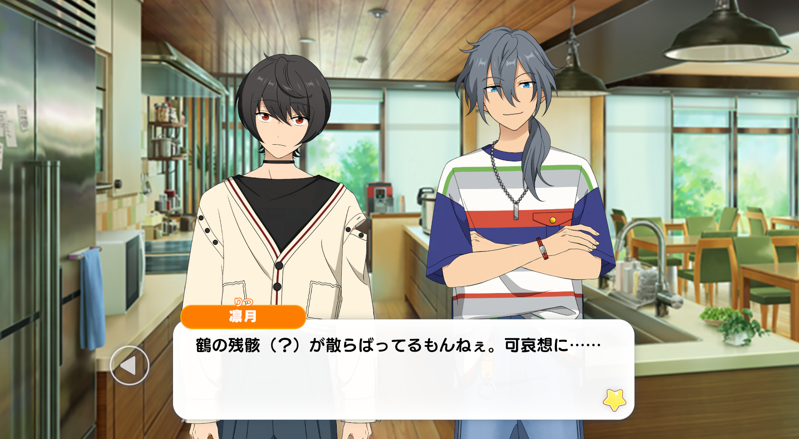

Niki: Anyway, I don’t really get all the complicated parts, but just like Ritsu-kun is saying, it has me completely stumped.
So I wondered if it was just a bad idea for someone who has no experience to make something so difficult.
Maybe origami is similar to cooking, in that you’re required to master the basics first, before you can move ahead to the next steps.
Ritsu: Ahaha, yeah, probably.
But judging from what you’ve got in your hand, you’re not even close to mastering the basics yet.

Ritsu: There are butchered crane(?) remains all over. Poor them…
This one doesn’t even have a head or wings, how did you even manage that?
Niki: Yeah, I don’t really get how that happened either. Nahaha, it’s so weird.
Ritsu: Regardless, I get the reasons behind Nikipyon’s strange behavior, now. But it was seriously confusing.
Even if you were struggling with origami, you still shouldn’t have been saying ominous things while folding it.
Niki: Ughh, I’m sorry~
Ritsu: Yep, it’s good you’re owning up to it.
So, what’s your plan with the origami shop? You don’t have much time before the bazaar, right?
Going by the way Nikipyon has been folding these cranes, the day will come before you get the chance to master it.
Children would be upset if you handed them tattered origami cranes, so why don’t you just forfeit that origami stall idea?
Niki: Hahh, to be honest, I clued in to the difficulty here around the time I ripped off that crane’s wings.
But still, what other things would kids even like?
–Oh! That’s right!
Ritsu-kun, you’re the ‘Military Strategist’ for “Knights”, aren’t you?
Ritsu: –Erm…
Niki: A ‘Military Strategist’ is a person a high ranking official employs to come up with an array of strategies, right?
Ritsu: I mean, in a broad sense? That’s…
Niki: Ritsu-kun! Please be my strategist!
Ritsu: Huh…?
Niki: I want your idea for something kids will enjoy!
Ritsu: Ugh, that’s a hassle. Bye-bye, Nikipyon.
Niki: W-wait, hold on a sec~!? This is my request of a lifetime!
In “Crazy:B”, it’s Rinne-kun and HiMERU-kun who’re the smart ones, and I always just follow along with what everybody else is doing~
And so, I’m useless at coming up with ideas like this.
Ritsu: Why not just sell sweets or something? Kids love sweets.
Niki: Nah, the sweets idea is a no-go.
Ritsu: Hah? You’re the one who asked for a suggestion, don’t be picky.
Niki: I’m not being picky, it’s an actual rule~. If it were possible, I’d choose to sell sweets.
Ritsu: Eh~ nope. Why don’t you do your own thinking, Nikipyon?
Niki: Ugh… it seems like even Ritsu-kun’s smarts aren’t capable of solving a puzzle this difficult.
Ritsu:…Huh?
Niki: I always thought that smart people could just endlessly come up with solutions for things. I thought Ritsu-kun would be able to come up with one.
Hahh, that’s disappointing…
Ritsu: No, no. Don’t misunderstand.
It’s not like it’s a strategist’s job to be a walking encyclopaedia. Our role is to come up with the most optimal solutions, to solve dilemmas.
We are still smart, but not like the kind of person who just knows everything. I don’t want you getting it twisted, okay?
Niki: Hm? So ‘military strategists’ aren’t even that smart in the end, that’s what you’re saying?
Ritsu: No, it’s that our role isn’t to provide “knowledge”, it’s to apply “wisdom”.
Niki: But you can’t think up any ideas, is that really what a ‘military strategist’ is?
Ritsu: It’s not like I can’t. Once the knowledge has been given, the rest is pretty easy.
Niki: So, you mean that you could come up with ideas for me if you tried to?
Ritsu: Naturally. I wouldn’t even need to try that hard.
Niki: I’m so happy! With the wise input of “Knights’” strategist, this bazaar’s gonna be a success for sure!
Ritsu: —Crap. Hold on a sec, Nikipyon. I didn’t even say said I’d thi–
Niki: Nahaha~ maybe the real treasure was the wise military strategist we made along the way, right~♪
Ritsu: (…Wait? Why does it feel like I can’t get out of this?)
(I only spoke up to avoid a troublesome situation, so how did it end up like this instead?)
(Maybe I never should have spoken up to Nikipyon the first place…?)
:: End of Chapter 3 ::
TL Notes
[1] Niki is doing something similar to how ‘maybe the real treasure was the friends we made along the way’ gets the word ‘friends’ swapped out for different things as a joke. In this case, it’s ‘持つべきものは友人’- (A friend is a good thing to have/what you need is a friend). Instead, he used ‘wise military strategist’.